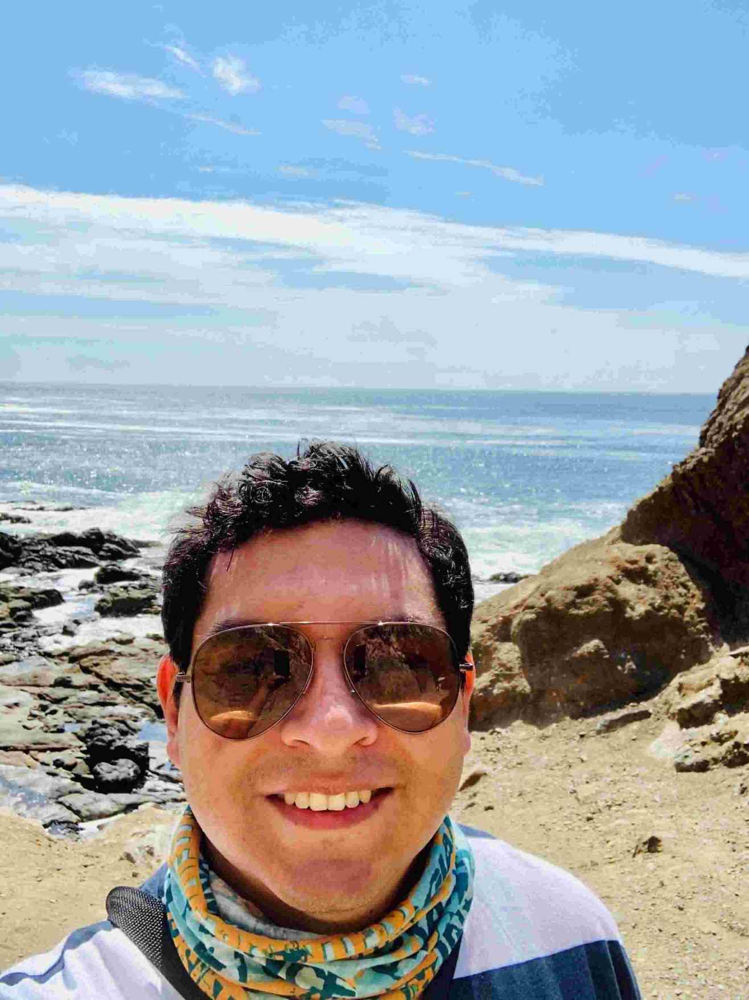
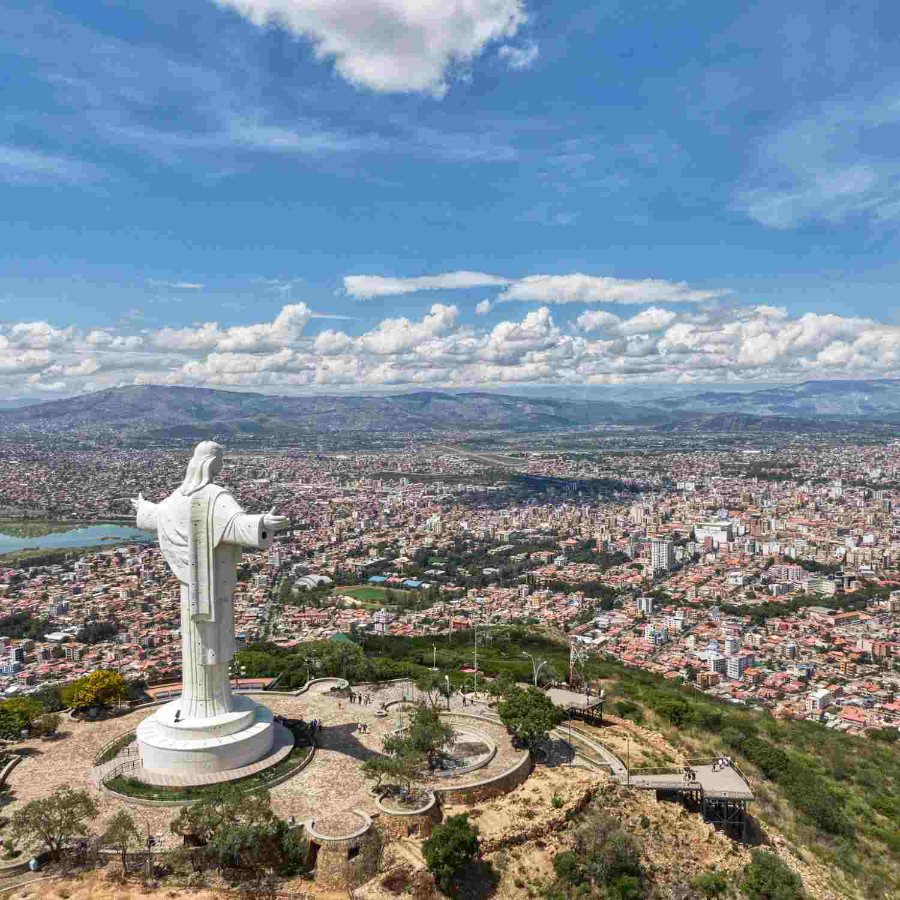

Guido Alejandro Vila Montano
About me

Hello! My name is Guido, and I am from Cochabamba, Bolivia. I enjoy working with technology and building projec ts using 3D printing and Plasma CNC. Additionally, I like learning more about renewable energy, especially wind energy, which is a key technology because it provides clean electricity, supports economic growth, and helps protect the environment. In my free time, I enjoy spending time outdoors by camping and hiking. I also like playing racquetball,soccer, exploring new places to go paddleboarding and swimming , and playing the board game Risk. Furthermore, I enjoy experimenting with creative DIY projects, where I can combine engineering, problem-solving, and hands-on skills.
My city

Cochabamba, Bolivia, known as the "City of Eternal Spring" for its pleasant climate, is Bolivia's culinary capital, famous for Andean culture, pre-Incan ruins, green spaces, landmarks like Cristo de la Concordia, and serves as a key agricultural, commercial, and cultural hub in the country's heart.